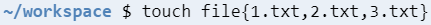

The "touch" command will either create a new file with the name you give it or, if a file with that name already exists, it will update a file's datestamp. The file will appear in your current working directory.
The above command will create a new text file with the name "my_file.txt".
To create many files at once you can use the format shown in the example below.
The above command will create three new files named "file1.txt","file2.txt" and "file3.txt".
The "mkdir" command creates new directories, also known as folders.

The above command creates the directory "myFolder" in the current working directory. To create nested directories use the "-p" option to create parent directories if they don't exist already, as shown below.
The above command will create a directory called "innermostFolder" inside "innerFolder" that will itself be inside "myFolder" even if "myFolder" and "innerFolder" don't exist yet.
The "ls" command will show you the contents of a directory. By default (without any arguments or options passed to it) it will show non-hidden files (files with names that don't have a "." prefix)